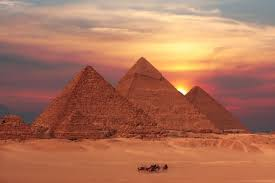
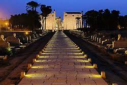
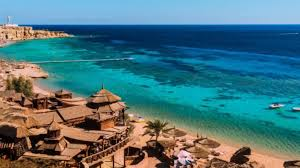
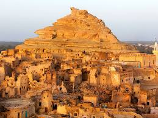

الأهرامات من أشهر المعالم الأثرية في العالم وتقع في الجيزة، وهي من عجائب الدنيا السبع القديمة.
The Pyramids of Giza are one of the most famous ancient landmarks in the world and one of the Seven Wonders of the Ancient World.

معبد الأقصر من أهم المعابد الفرعونية في مصر ويقع في مدينة الأقصر ويجذب ملايين السياح.
The Luxor Temple is one of the most important Pharaonic temples in Egypt, located in the city of Luxor, and attracts millions of tourists.

شرم الشيخ مدينة سياحية جميلة على البحر الأحمر تشتهر بالشعاب المرجانية والمنتجعات.
Sharm El-Sheikh is a beautiful tourist city on the Red Sea, known for its coral reefs and resorts.

واحة سيوة تقع في الصحراء الغربية وتشتهر بجمالها الطبيعي وتراثها الثقافي الفريد.
Siwa Oasis is located in the Western Desert and is known for its natural beauty and unique cultural heritage.